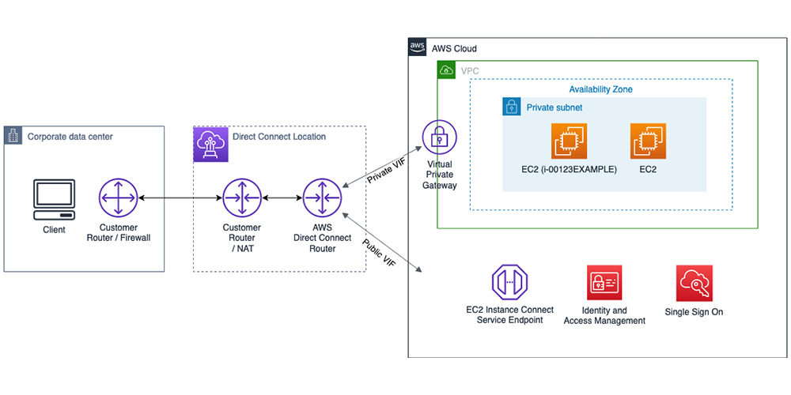

By configuring an EC2 instance on Amazon Web Services, I gained hands-on experience in securing cloud environments. This project allowed me to grasp the nuances of cloud-based security measures and their practical implementation. I made a number of complex decisions regarding instance types, security groups, access controls, and data encryption while configuring the EC2 instance. This introduced me to the various factors that must be taken into account when designing a secure cloud infrastructure. To ensure a balance between performance, cost-effectiveness, and, most importantly, strong security, I made conscious decisions.
